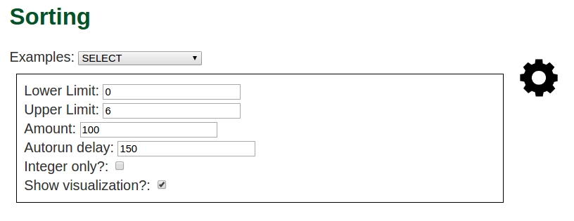

Sorting
Do you need help understanding or visualizing sorting algorithms?
If you do, Sort[101] is for you!
Here is the main page of Sort[101]:

You can see the basics here. Users type code (JavaScript) into the input box, and then hit run or autorun buttons.
After this, the code will run (if you use autorun, the example is animated) and (hopefully) will sort the graph.
You know the graph is sorted once every bar is colored green.
Colors
There are three colors implemented right now. To colors and animations, design your code to run in autorun mode (your entire code is ran over and over).
- Red: The bars have not been swapped, and they are not in order.
- Green: The bar after the current one is larger, and the one before is smaller. This shows that green bars are ordered among other green bars.
- Blue: The bars have just been swapped (using the swap() method)
In this example:

The right hand side is already somewhat sorted (this is to be expected with a bubble sort), a large portion of the mid range bars are still being switched, and the ones on the very left are somewhat in order.
Settings
To change settings, click the gear icon in the top right of the page:

This will expand the list of settings, which you can change the upper and lower limit of the bars produced (the y scale), the amount of bars, the delay between autoruns, whether or not to only produce integers, and whether or not to show the graph.
All of your settings are cached, so if you refresh the page, they will be the same as when you left it.
The same is true with your code, so if you run some code, then refresh the page, the input box will be where you left it.
Example
All of these pictures so far have been using the Animated Bubblesort code, which can be found by going to the sorting page, and selecting “Animated Bubblesort” from the Examples list, then click autorun.
You should see the bars slowly moving about and changing colors. You can see all the code in the input box.